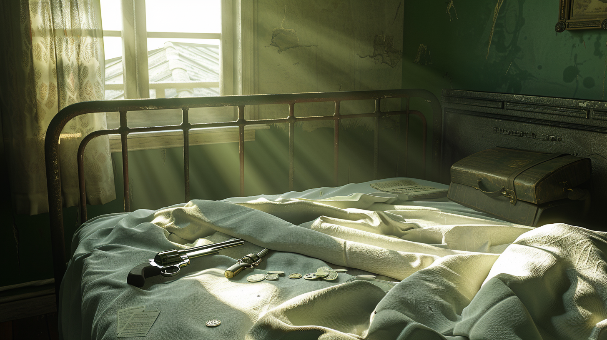

I sat up on the bed, in senseless and perfect silence, as if Madden was already peering at me. Something—perhaps merely a desire to prove my total penury to myself—made me empty out my pockets. I found just what I knew I was going to find: the American watch, the nickel-plated chain and the square coin, the key ring with the useless but compromising keys to Runeberg’s office, the notebook, a letter which I decided to destroy at once (and which I did not destroy), a five-shilling piece, two single shillings and some pennies, a red and blue pencil, a handkerchief—and a revolver with a single bullet. Absurdly I held it and weighed it in my hand, to give myself courage. Vaguely I thought that a pistol shot can be heard for a great distance.
From utter terror I passed into a state of almost abject happiness. I told myself that the duel had already started and that I had won the first encounter by besting my adversary in his first attack—even if it was only for forty minutes—by an accident of fate. I argued that so small a victory prefigured a total victory. I argued that it was not so trivial, that were it not for the precious accident of the train schedule, I would be in prison or dead. I argued, with no less sophism, that my timorous happiness was proof that I was man enough to bring this adventure to a successful conclusion. From my weakness I drew strength that never left me.
Then I reflected that all things happen, happen to one, precisely now. Century follows century, and things happen only in the present. There are countless men in the air, on land, and at sea, and all that really happens happens to me. The almost unbearable memory of Madden’s long horseface put an end to these wandering thoughts.